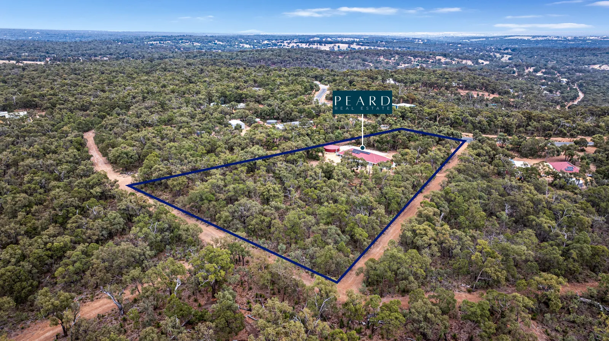
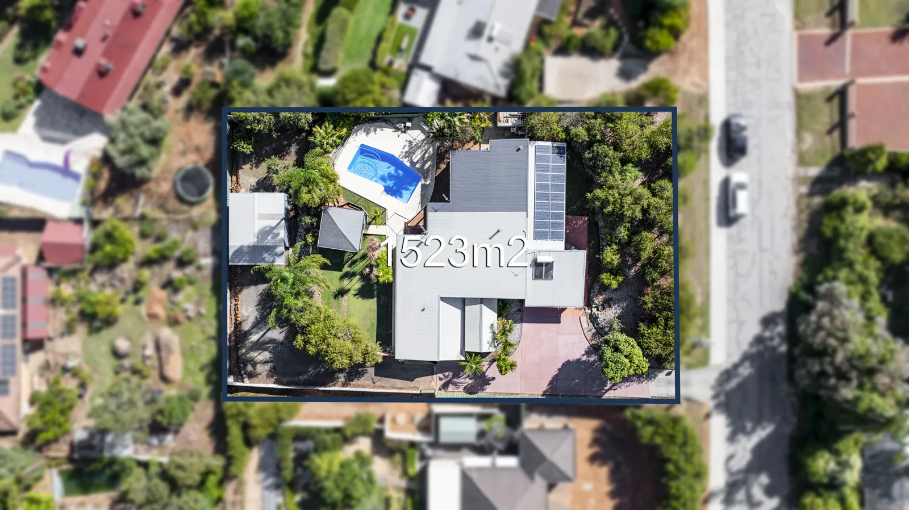
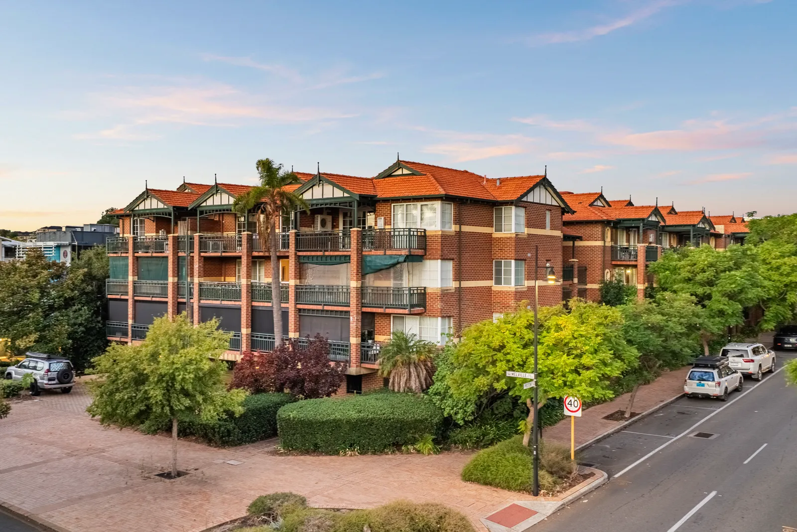
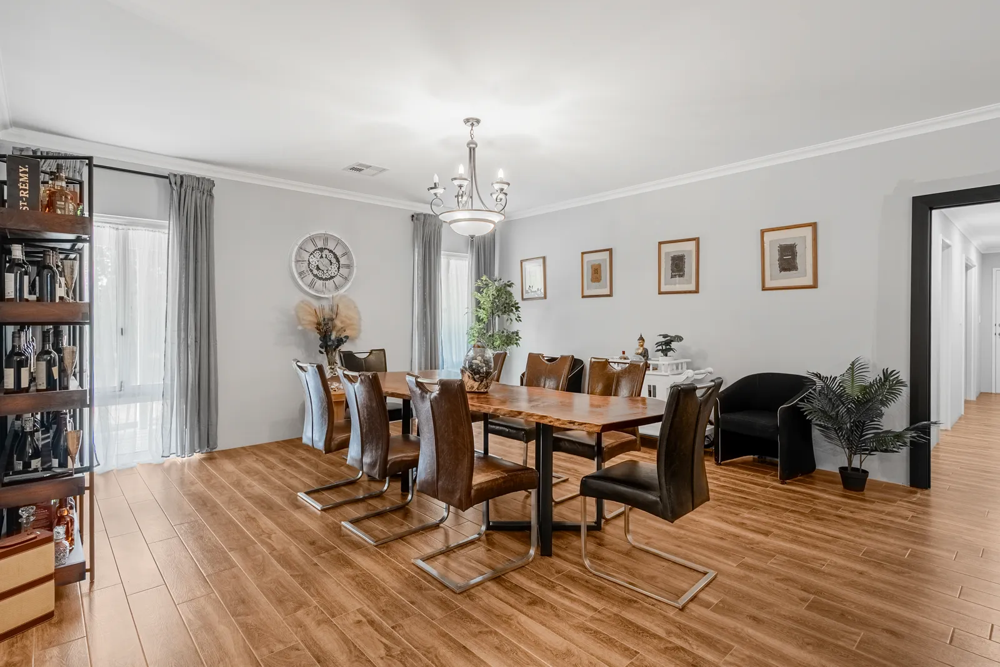

For Perth commercial agents, owners and landlords
Commercial Property Photography Perth
Offices, shops, warehouses and development sites, photographed for sale or lease. Stills, drone, measured floor plans and video from one crew, delivered next day across the Perth metro area.
Baker Production photographs commercial property across Perth — offices, retail, industrial and warehouse, medical, hospitality and development land — for sale or lease. Every commercial job is quoted individually because the scope varies so much. Photography, drone and floor plans are delivered next day; video takes two days.
Commercial photos answer different questions
A business weighing a lease, or an investor weighing a yield, runs a checklist: size, access, parking, fit-out, and whether it suits their staff and customers. The photos have to answer those questions before anyone books an inspection.
CommercialRealEstate.com.au’s own photography advice makes the point that prospective occupiers look closely at kitchens, common areas and end-of-trip facilities, so even bathrooms and utility areas such as bicycle storage need photographing. That is a longer, more practical shot list than most residential shoots, and it is where we start.
What we photograph
Offices
Reception, open-plan floor, meeting rooms, kitchen, end-of-trip and amenities, plus the view from the window line. Wide, straight verticals so the floor plate reads at a glance.
Retail and strip shops
Street frontage, signage and glazing, the trading floor, back-of-house and storage, and the neighbouring tenancies that bring foot traffic. Shot before opening where possible.
Industrial and warehouse
Roller doors, hardstand and truck access, office component, clear-span interior and yard. A drone shot shows access to arterial roads and the size of the site in one frame.
Medical and consulting suites
Waiting room, consult rooms, accessible entry and parking. Patient areas are photographed empty, with screens and files out of view.
Hospitality
Dining room, bar and kitchen set as they trade, plus a twilight exterior so the venue looks open when the lights are on.
Development sites and land
Aerials with the boundary outlined, road and landmark overlays, and the surrounding zoning context. See the land section of our drone photography page.
Shooting around a working business
Most commercial listings are occupied. A good shoot gets clean images without disrupting the tenant or exposing anything that should stay private.
- Access through the agent or owner. Entry to a leased shop or office is arranged with the tenant under the lease. We arrive at the agreed time and keep to it.
- Before opening or after close. Empty spaces photograph better than busy ones. Tell us the trading hours when you ask for a quote.
- People only with consent. Staff and customers stay out of frame unless they have agreed to be in it. A posed, consenting team shot can work for a business-for-sale listing.
- Nothing confidential on show. Screens off, whiteboards wiped, files and client names out of view.
- Signage working. CommercialRealEstate.com.au advises checking that illuminated signage is working before the shoot — it matters most for twilight exteriors.
- Edits disclosed. Decluttering or virtual staging through Baker Studio is marked as virtually enhanced, the same as on residential work. Our staging disclosure guide explains why.
Drone work near Perth Airport and Jandakot
A lot of Perth’s industrial land sits close to its two controlled airports. Under CASA’s standard operating conditions, drones over 250 grams must stay at least 5.5 km from a controlled aerodrome, which in the metro area means Perth Airport and Jandakot. Industrial areas inside that distance can still be flown, but only with an approval arranged before the shoot, so allow extra lead time for those addresses.
Our WA drone rules guide covers what to ask any operator, and the drone photography page shows the road and boundary overlays we add.
Floor plans and lettable area
We measure floor plans on site, so they show the layout as it stands today — including fit-out walls, mezzanines and offices added since the original drawings. That is the right tool for marketing: a buyer or tenant can see how the space works and roughly how big it is.
It is not the same thing as a lettable-area survey. Commercial leases in Australia normally state area using the Property Council of Australia’s Method of Measurement, which covers office, industrial and retail premises. Its glossary defines Net Lettable Area (NLA) for office tenancies, Gross Lettable Area (GLA) for warehouses, industrial buildings and showrooms, and Gross Lettable Area Retail (GLAR) for shops. If a lease, rent or sale price depends on an area figure, use a surveyor’s measurement — we can show that figure on the marketing plan. The 2D vs 3D floor plans guide helps choose the format, and floor plans has the details.
Build the campaign
Every commercial campaign is quoted as a whole, but it is made from the same services we run every day for Perth agents.
Recent work




These examples are from Perth residential shoots; the techniques are the same. Ask for commercial samples when you request a quote. More in the Baker Production gallery.
Selling a home rather than a business premises? See our Perth real estate photographer page.
How quoting works
Send us the following by phone or email and we come back with a fixed quote, inclusive of GST:
- The address, and whether it is for sale, for lease or both
- The property type and approximate floor area and site size
- What you need: photos, drone, floor plan, twilight, video, 3D tour
- Trading hours, tenant contact and any building access or induction rules
- Your campaign date, so delivery lands before it
Commercial work is quoted rather than booked online. Call 0466 789 522 or email admin@bakerproduction.com. Standard residential prices are on the pricing page for reference. We cover the whole metro area — see areas we cover — and more answers are in the FAQ and our guides for agents and sellers.
Commercial property photography — common questions
Sources
- CommercialRealEstate.com.au — Commercial real estate photography: how to get the best property photos
- Property Council of Australia — Method of Measurement: Commercial
- Property Council of Australia — Glossary of property terms (NLA, GLA, GLAR)
- CASA — Drone rules and operating conditions
Sources checked 11 November 2026. General information only, not legal or valuation advice.
Get a commercial quote.
Tell us the property and the deadline; we come back with a fixed price.